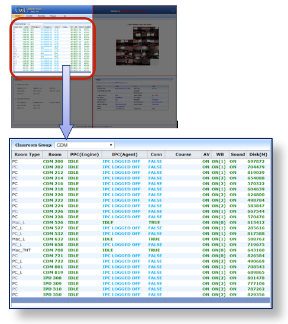

There are about 70 COL enabled classrooms across two DePaul University campuses i.e. Loop campus and Lincoln Park which are administered via the RA website. At the Loop campus, the classrooms are across three buildings, i.e. CDM building, Lewis Center and Daley building. On the RA website, these classrooms are grouped by campus/building, for easy navigation and monitoring.
The Classroom Group dropdown allows the user to select the campus/building and then displays all the classrooms in that group, with the current status of all the COL software and hardware equipment in each classroom.
- ► CDM (Default at logon)
- ► DALEY
- ► LEWIS
- ► LINCOLN PARK
✺ Each Classroom Group Contains 10 columns showing different equipment’s status
-
❖ Room Type:
Shows different kinds of IPC (Instructor PC) available in a particular classroom.
- ► PC: Classroom having Windows IPC with CDM Image.
- ► PC_L: Lab having Windows IPC with CDM Image.
- ► Mac_L: Lab having MAC IPC (Either iMac or Mac mini).
- ► Mac_THT: Theater having MAC IPC (Either iMac or Mac mini).
- ► Univ_PC: Classroom having Windows IPC with University (IS) image.
- ❖ Room: Displays Building Name with Room Number e.g. (CDM 200, LEWIS 1005)
- ❖ PPC (Engine): Displays the status of the classroom’s Production PC (COLEngine)
- ► IDLE: When the COLEngine is idle or in standby state
- ► RECO: While recording is in progress.
- ► PROC: This state appears when recording is ended and is being processed
- ► UPLO: This state appears when processing is ended, and lecture is being uploaded.
- ► ENGINEOFFLINE: RA website cannot communicate with COLEngine application. This can be caused by one or more of the following reasons.
- COLEngine.exe not running due to
- COLEngine process has ended abruptly
- PPC is logged off
- PPC is powered off
- PPC is rebooting
- PPC lost internet connection
- PPC IP has changed and RA no longer has its most recent IP
- ❖ IPC(Agent): Displays the status of the classroom’s Instructor PC (COLAgent)
- ► IPC LOGGED OFF: Computer is logged off (COLAgent is not running).
- ► AGENTLOADING. (x seconds): Computer was just logged in and COLAgent is about to launch. x is the number of seconds elapsed after logon until the COLAgent finally starts running.
- ► IDLE: Computer is logged in, COLAgent is running and is in Idle state - i.e. no recording in progress
- ► RECO IPC SCREEN: COLAgent is running and is in Recording state, i.e. there is a recording in progress and the IPC screen is being captured.
- ► AGENTPAUSED (..... seconds): There is a recording in progress but the instructor has temporarily disabled the COLAgent from capturing the IPC screen.
- ► AGENTOFFLINE: The RA website is not getting a response from COLAgent application. This can be caused by one or more of the following reasons:
- COLAgent.exe not running
- COLAgent process has ended abruptly
- IPC is powered off
- IPC is rebooting
- IPC lost internet connection
- IPC IP has changed and RA no longer has its most recent IP
- ❖ Conn: This displays the connection state between IPC & PPC (COLAgent and COLEngine)
- ► TRUE: This means there is a connection between IPC & PPC (Production PC).
- ► FALSE: This means there is no connection between IPC & PPC (Production PC).
- ❖ Course: Displays course description which is currently being recorded.
- ❖ AV: Provided feedback of Audio – Video recording status
- ► ON: On means, audio and video are being captured and sent to the RA website for monitoring, but there is no recording currently in progress
- ► (increasing_number): This means the AV capture process is successfully capturing and recording the audio and video. As soon as recording begins, the AV status changes to the current AV frame number and as the recording progresses and more frames are captured, this number keeps on increasing
- ► OFF: Off means, audio and video are being not recorded
- ► NO CHANGE (lastframenumber): (seconds) This happens if there is a recording in progress and the AV Capture process encounters an issue. (lastframenumber) indicates the frame at which AV capture stopped working and (seconds) counts the number of seconds since the AV Capture stopped working.
- ❖ WB: Displays number and status of mimio devices in the selected classroom.
- ► When Room is IDLE:
- ON (1): Classroom has 1 mimio and it is being successfully detected
- ON (2): Classroom has 2 mimios and they are being successfully detected
- ON(0/1) / ON (1/2) / ON (0/2):
- (0/1) means out of 1 none of them are detected.
- (1/2) means out of 2, 1 of them is not detected
- (0/2) means out of 2 none of them are detected.
- OFF: When the white-board process is stopped abruptly, or Engine is offline
- ► When the room is RECO:
- CAP (x, y) where, x = Mimio 1 events y = Mimio 2 events
- ❖ Sound: Displays the status of audio feedback from the microphone
- ► ON: Audio is being received by the PPC from the microphones/mixer
- ► OFF: No audio is being received by the PPC from the microphones/mixer
- ❖ Disk(M): Shows current available Disk Space in PPC (Production PC) in Megabits. If the PPC runs out of disk space, it is a critical issue because it won’t be able to store the recorded data anymore. If this value goes below 50,000 it will show up in RED color on the Monitor Page.